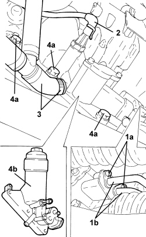

1084B34 CARTRIDGE ENGINE OIL FILTER SUPPORT - R + R
- Path
- Procedures > 10 ENGINE > 1084 ENGINE LUBRICATION > 1084B ENGINE OIL LUBRICATION CIRCUIT > 1084B34 CARTRIDGE ENGINE OIL FILTER SUPPORT - R + R
- Kind
- repair procedure (removal / refitting; the operation number is the code)
- Applies to
- engines: 2.4 JTD 20v; all production periods
- Interactive page
- https://sloeber94.github.io/elrnDB-aBrrSpdr/en/#/946003030
Applies to: engines: 2.4 JTD 20v; all production periods
 Removing
Removing
 Refitting
Refitting- Position the vehicle on a lift.
- Make sure that the ignition key is in the OFF position, then disconnect the battery terminal (-).
Op. 7055B54 UNDER ENGINE PROTECTION/GUARD - R.R.
Op. 1084A16 OIL DIPSTICK PIPE - R.R
1. Undo the bolts (1a) and disconnect the engine oil supply and return pipe (1b), engine oil filter mounting side.
2. Disconnect the electrical connection from the engine oil pressure warning light switch.
Description | Connector | |
|---|---|---|
2 | Insufficient engine oil pressure sensor (switch) |
3. Loosen the band and disconnect the oil return pipe to the sump, cartridge engine oil filter mounting side.
4. Undo the bolts (4a) and remove the cartridge engine oil filter mounting (4b).

Applies to: engines: 2.4 JTD 20v; all production periods
Refitting
Removing- Place the cartridge engine oil filter mounting in its housing and secure it tightening the bolts to the recommended torque.
Component | Fastening | dia | Value (daNm) | Validity |
|---|---|---|---|---|
Engine oil filter mounting | Bolt | M20 | (engine block side) 3.6 | 2.4 JTD 20V |
- Connect the oil return pipe to the sump, cartridge engine oil filter mounting side and tighten the band.
- Connect the electrical connection to the engine oil pressure warning light switch.
- Connect the engine oil supply and return pipes, engine oil filter mounting side and secure them using the bolts.
Op. 1084A16 OIL DIPSTICK PIPE - R.R
- Connect the negative battery terminal.
Op. 0010T11 ENGINE OIL - CHECK LEVEL AND TOP UP, IF NECESSARY
Op. 7055B54 UNDER ENGINE PROTECTION/GUARD - R.R.
- Remove the vehicle from the lift.